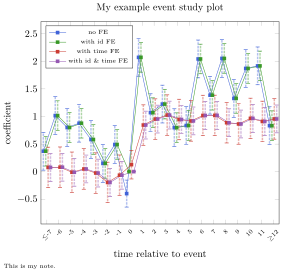

Special Usage: Event Study
In this section, I will demonstrate how to use our pakcage to produce an event study plot. We first create a panel data consisting of 100 individuals and 20 periods.
using Coefplots
using FixedEffectModels
using DataFrames
using Random
Random.seed!(1234)
N = 100 # 100 individuals
T = 20 # 20 periods
idfe = rand(N)
timefe = rand(T)
event_time = 8 # make the eighth period be the event time
id = repeat(1:N, inner=T) # generate id
is_treated = id .< N/2 # make first half of individuals are treated, last half of indivuduals are controls
time = Float64.(repeat(1:T, outer=N) .- event_time) # generate time
treatment = repeat(rand(N), inner=T) .* is_treated # generate treatment, 0 if obs are controls
idfe = rand(N)
timefe = rand(T)
outcome = treatment .* (time .> 0) + idfe[id] + timefe[Int.(time .+ event_time)] .+ rand(N*T) # generate outcome, treatment only have an effect after event time
#add id FE and time FE, also add a noise.
df = DataFrame(id = id, time = time, outcome = outcome, treatment = treatment)
@view df[1:10, :]| Row | id | time | outcome | treatment |
|---|---|---|---|---|
| Int64 | Float64 | Float64 | Float64 | |
| 1 | 1 | -7.0 | 1.45475 | 0.791624 |
| 2 | 1 | -6.0 | 2.08694 | 0.791624 |
| 3 | 1 | -5.0 | 1.95472 | 0.791624 |
| 4 | 1 | -4.0 | 1.89466 | 0.791624 |
| 5 | 1 | -3.0 | 1.74856 | 0.791624 |
| 6 | 1 | -2.0 | 1.43717 | 0.791624 |
| 7 | 1 | -1.0 | 1.22961 | 0.791624 |
| 8 | 1 | 0.0 | 0.908697 | 0.791624 |
| 9 | 1 | 1.0 | 2.51456 | 0.791624 |
| 10 | 1 | 2.0 | 2.5522 | 0.791624 |
We run our four specifications where we (i) do not have any fixed effects, (ii) include individual fixed effect, (iii) include time fixed effects, and (iv) include both individual and time fixed effect, with the help of FixedEffectModels.jl
res_pool = reg(df, @formula(outcome ~ time&treatment + treatment); contrasts = Dict(:time => DummyCoding(base=0)), progress_bar = false);
res_idfe = reg(df, @formula(outcome ~ time&treatment + treatment + fe(id)); contrasts = Dict(:time => DummyCoding(base=0)), progress_bar = false);
res_timefe = reg(df, @formula(outcome ~ time&treatment + treatment + fe(time)); contrasts = Dict(:time => DummyCoding(base=0)), progress_bar = false);
res_both = reg(df, @formula(outcome ~ time&treatment + treatment + fe(time) + fe(id)); contrasts = Dict(:time => DummyCoding(base=0)), progress_bar = false);The variable names are automatically generated by the regression package of choice. In the case of FixedEffectModels.jl, it looks like something like "time: -7.0 & treatment" meaning the interaction term between the time=7.0 dummy and the treatment variable. For this to be plotted with a readable x tick, we define the following vector rename_rule, populated with the rules by which we want to change the variable name:
rename_rule = ["time: -7.0 & treatment" => "\$\\leq\$-7",
"time: -6.0 & treatment" => -6,
"time: -5.0 & treatment" => -5,
"time: -4.0 & treatment" => -4,
"time: -3.0 & treatment" => -3,
"time: -2.0 & treatment" => -2,
"time: -1.0 & treatment" => -1,
"treatment" => 0,
"time: 1.0 & treatment" => 1,
"time: 2.0 & treatment" => 2,
"time: 3.0 & treatment" => 3,
"time: 4.0 & treatment" => 4,
"time: 5.0 & treatment" => 5,
"time: 6.0 & treatment" => 6,
"time: 7.0 & treatment" => 7,
"time: 8.0 & treatment" => 8,
"time: 9.0 & treatment" => 9,
"time: 10.0 & treatment" => 10,
"time: 11.0 & treatment" => 11,
"time: 12.0 & treatment" => "\$\\geq\$12"]On a sidenote, the dollarsign is escaped with a backslash. The backslash is also escaped with a backslash. For more information please see LaTeX escaping.
Now, we are ready to call parse() or plot() to get the results from the regression object.
p = plot(res_pool; rename = rename_rule,
keepconnect = true,
title = Label(content="no FE"))We can also combine the plots of the different specifications to one single plot.
pool = parse(res_pool; rename = rename_rule,
keepconnect = true,
title = Label(content="no FE"))
with_idfe = parse(res_idfe; rename = rename_rule,
keepconnect = true,
title = Label(content="with id FE"))
with_timefe = parse(res_timefe; rename = rename_rule,
keepconnect = true,
title = Label(content="with time FE"))
with_bothfe = parse(res_both; rename = rename_rule,
keepconnect = true,
title = Label(content="with id \\& time FE"))
m = Coefplots.MultiCoefplot(pool, with_idfe, with_timefe, with_bothfe;
xticklabel = CaptionStyle(rotate=45, size=6),
legend = Coefplots.Legend(at=(0.02,0.98),
anchor=Symbol("north west"),
size=6),
note = Note(content="This is my note.",
captionstyle=CaptionStyle(size=6)),
xlabel = Label(content="time relative to event"),
ylabel = Label(content="coefficient"),
title = Label(content="My example event study plot"))
p = plot(m)